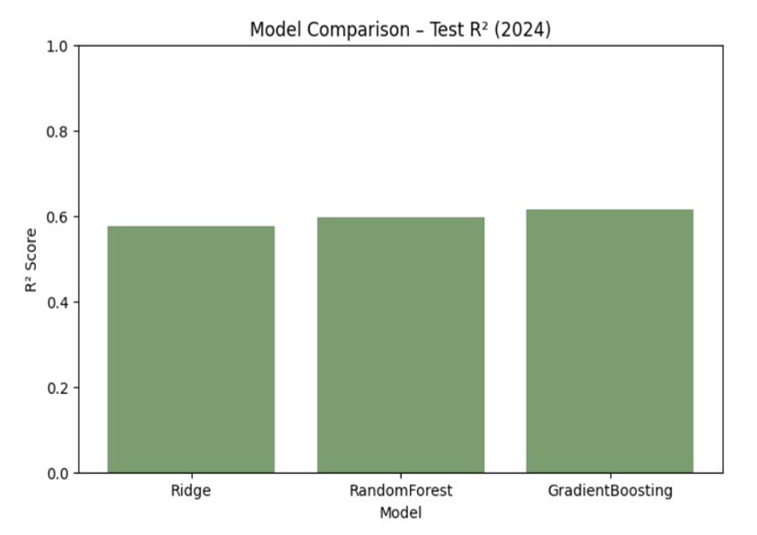
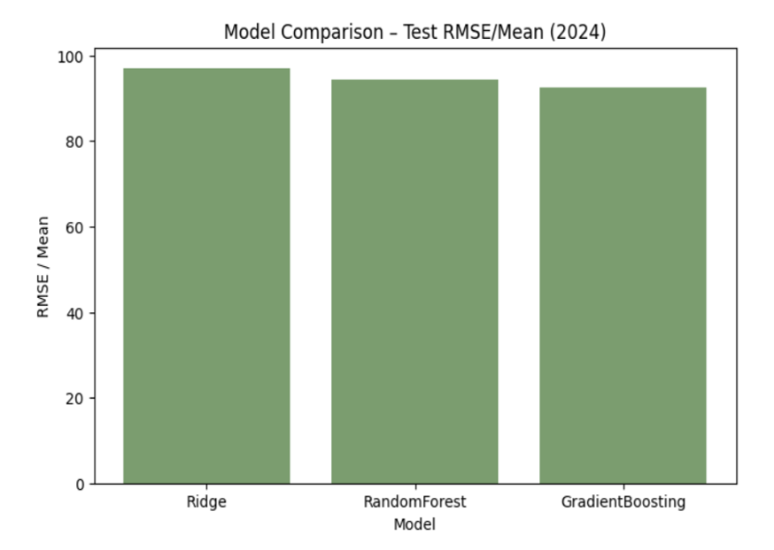
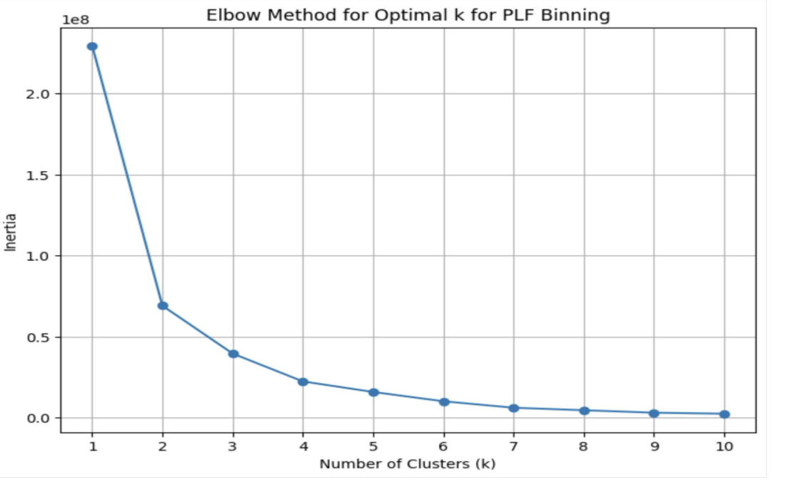
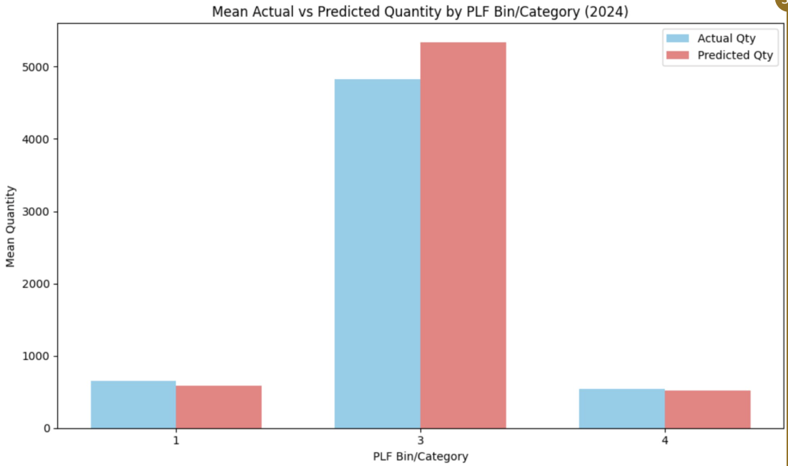

Purdue Data Mine — Hubner Seed
An end-to-end predictive analytics platform that transforms raw production-line data into actionable demand forecasts, helping seed producers plan inventory with confidence.
Built for Hubner Seed in partnership with the Purdue Data Mine
Interactive treemaps, donut charts, and consistency analyses reveal how seed product lines (PLFs) perform across years and companies.
Multiple regression and ML models are compared on R² and RMSE to find the best predictor for future seed demand by PLF cluster.
A robust ETL pipeline ingests messy, wide-format CSVs from multiple production years and normalizes them into analysis-ready frames.
Filter by year and explore seed demand patterns (synthetic data)
Machine learning model comparisons and cluster analysis




Tools and frameworks powering this project